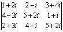
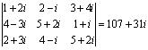

三階矩陣行列式
更新日期: 2011年5月6日
程式 (63 bytes)
?→A: ?→B: ?→C: ?→D: ?→X: ?→Y: ?→M:
BYM - MXC: ?→M: Ans + DMC - MYA:
?→M: Ans + AXM - MDB
例題1: 計算下列的行列式:
按 Prog 1 再按 1 EXE 2 EXE 3 EXE 7 EXE 8 EXE 9 EXE 6 EXE 5 EXE 2 EXE (顯示行列式的值為12)
例題2: 計算下列的行列式:

只適用於複數模式輸入程式二
按 Prog 1 再按 1 + 2
i EXE 2 - i EXE 3 + 4i EXE4 - 3i EXE 5 + 2i EXE 1 + i EXE
2 + 3i EXE 4 - i EXE 5 + 2i EXE (顯示實數部為 107)
Shift Re<=>Im (顯示虛數部為 31i)

返回 CASIO fx-50FH、fx-3650P II、fx-50FH II及fx-50F PLUS 程式集